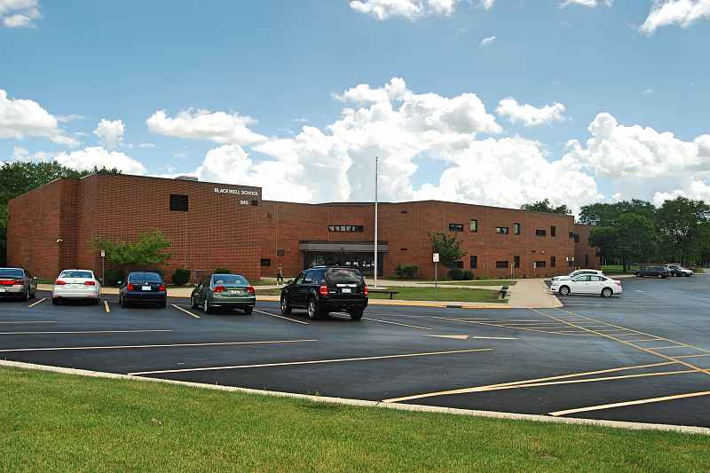

Family & Friends
This is the 2nd part of the interview. Please enjoy!
- How many people are in your family?
I currently have 7 people living in my household. Both are my grandparents who visit every year.
This year in in November, both my grandparents will go back to Pakistan.
- Do you have any siblings?
I'm actually the middle daughter of the family. I have a older sister who is 1 year older than me. She currently resides as a Sophomore in Hoffman Estates High School.
My younger sister is 7 years younger than me. I agree it is a large age gap. She is a second grader attending Elizabeth Blackwell Elementary.
- Have you been to Blackwell before?
I did attend Blackwell with my older sister. It ranges from kindergarten to 6th grade. There used to be preschool classes,
but after a few years it got taken out. My younger sister had to go to another school before coming here. If you want to learn more about
the school you can click on the image below.


- How is your family like?
I mean similar to every asian household. Mine is a bit religious as I am a Muslim. My family is a bit crazy and hard to handle,
but that only shows how kind and caring they are on the inside. That may have sounded cheesy but my family don't ever express their feelings.
Instead they drive you nuts to disguise what's happening to them. I'm used to it though.
| Family Overview in Household |
| First Name |
Last Name |
Birthday |
Relationship |
Age |
| Humera |
Ahmed |
July 21st 1977 |
Mother |
42 |
| Syed |
Ahmed |
October 7th 1977 |
Father |
42 |
| Tasneem |
Ahmed |
September 28th 2003 |
Older sister |
15 |
| Ramin |
Ahmed |
October 19th 2004 |
Daughter |
14 |
| Zenab |
Ahmed |
December 14th 2011 |
Younger sister |
14 |
| Tanveer |
Kamal |
January 2nd, 1955 |
Grandfather |
64 |
| Mussarat |
Begum |
Feburary 11th, 1949 |
Grandmother |
60 |